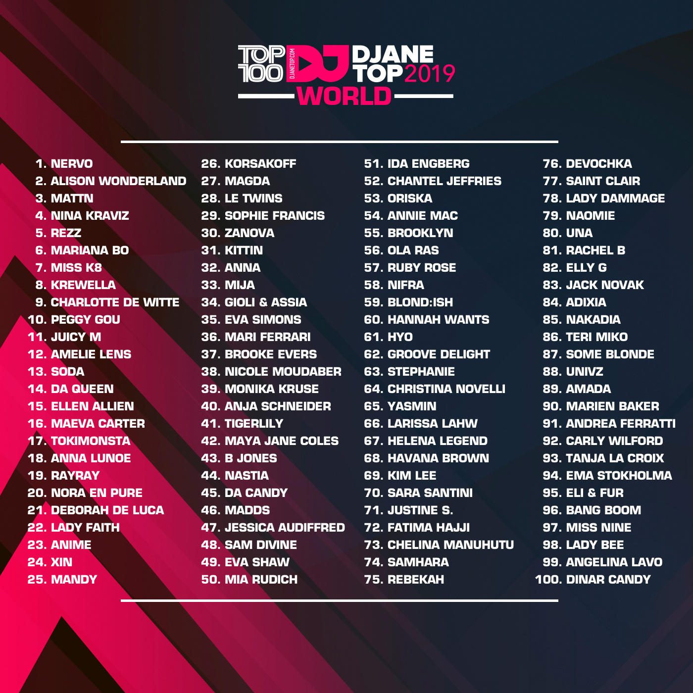

¡Djane Mag anuncio los resultados de las 100 mejores Djs femeninas del 2019!
Djane Mag es una revista digital que existe desde 2013, dedicada a promocionar e impulsar a las DJs femeninas con una encuesta pública anual llamada “TOP100DJANES“.
El sitio está ganando popularidad en todo el mundo y tiene representantes regionales en todos los continentes. La palabra “DJANE” fue elegida y popularizada para definir un significado más corto para “DJ femenina“. Con el tiempo,
la palabra ganó mayor popularidad entre las DJ femeninas y en los medios. Año con año las personas votan para elegir a la mejor DJ femenina, a través de un enlace para la votación en top 100 djanes, completando el formulario de votación
con los nombres de las DJs.
Para este 2019 se anunció el top de las 100 mejores DJs femeninas, de acuerdo a la votación se eligió al dúo de hermanas “NERVO” como las mejores DJs femeninas.
